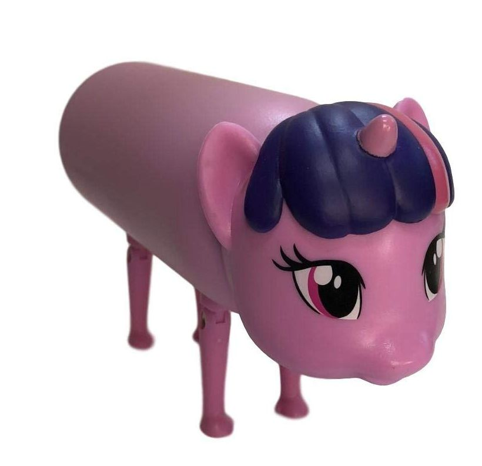

One of the hobbies that I have had since I was very little is art. I love everything about it, from drawing a picture of the sunset I have taken on my phone to a character from a new show I just started. When I was younger, I mostly immersed myself in my own work, drawing whatever came to mind, but now I have grown to appreciate the works of others, whether from the profiles of artists on Instagram or the refined paintings hung in museums. Another hobby of mine is music. I love listening to songs, whether I am walking home from school, working on a project, or studying. My favorite artists as of now include NewJeans, Laufey, The Marias, and many more. I always find myself returning to their songs since they feel very nostalgic to me, and I have had many good experiences tied to them.Shows have been a big part of my life growing up and even now. Back when I lived in China, I remember that every morning before going to school, I would go with my grandma to her workplace to watch Chibi Maruko Chan. On weekends, I remember going to the store to buy fairy wands because I watched Balala the Fairies. After I moved to America, the two shows that consumed my life while I was trying to learn English were Peppa Pig and My Little Pony. I watched Peppa Pig so much that even to this day, I remember the specific details of almost every episode. I loved watching My Little Pony with my younger sister, and I remember we would always sing the songs together after watching an episode or movie. .
A lot of my favorite foods now are the same as when I was growing up. I still like soup dumplings, Peking duck, and hotpot (except now I can handle eating from the same spicy soup base like my mom and grandparents do, instead of always having to ask for the tomato-flavored one). However, I especially miss the foods back in China that I would get with my grandma after she picked me up from school or when we were on our way home from getting groceries. I loved getting the street foods like glutinous rice cakes with brown sugar syrup or roasted chestnuts during the wintertime, eating them as I sat on the seat of the bicycle behind my grandma as she biked us home. .